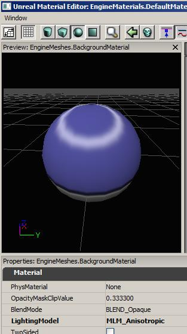
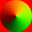
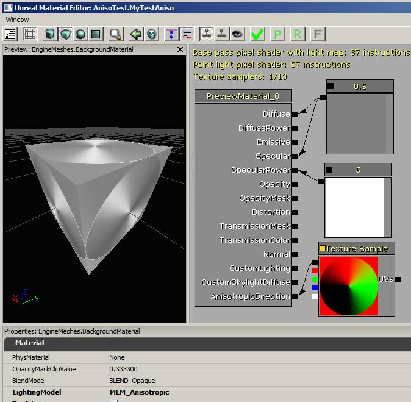
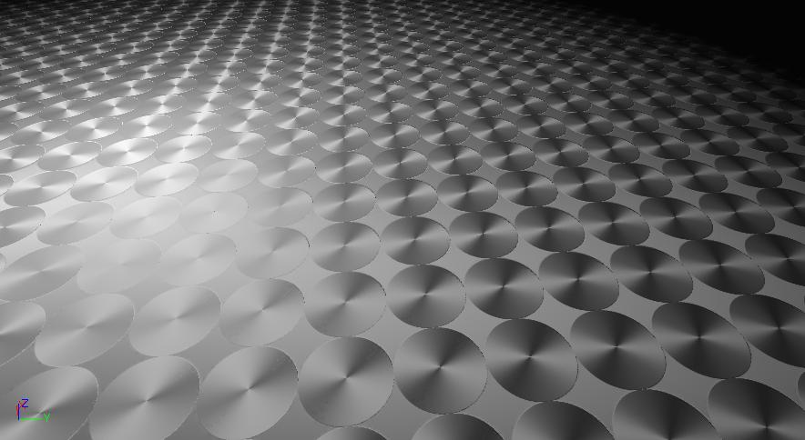
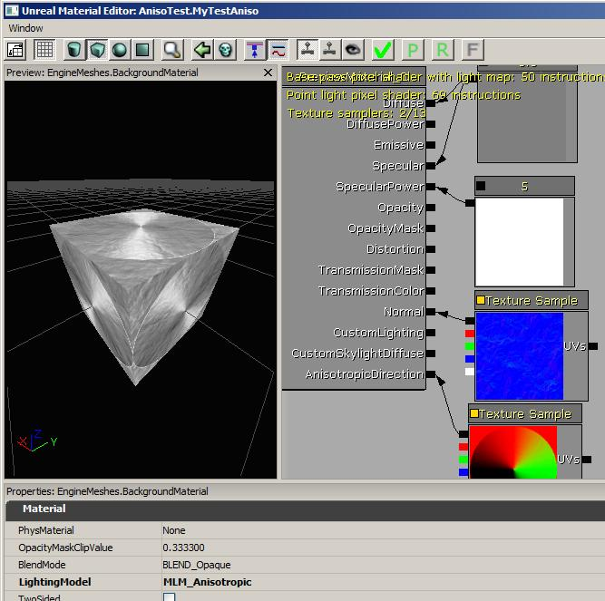

Anisotropic Lighting
Overview
An anisotropic surface such as brushed metal, the shiny side of a CD, or human hair, gets its characteristic look from the fine grain, grooves or strands at the surface. When performing lighting with regular materials, the calculation only considers the surface's normal vector, the vector to the light, and the vector to the camera. But for anisotropic surfaces there is not really a continuous normal vector to use, because each strand or groove has a variety of different possible normal directions all perpendicular to the direction of the groove.
In the MLM_Anisotropic lighting model, the lighting calculation makes use of the tangential direction of the grooves or strands to model how the light will be reflected by the surface. You must supply this direction to the material using the AnisotropicDirection input.
Unreal's static lightmap data does not capture the anisotropic direction information very well, so anisotropic materials should be avoided on this type of geometry. However, with Lightmass and DominantLights, the shadow is precomputed but the specular is fully dynamic, so anisotropic materials will work well in this situation.
Settings
To use the anisotropic lighting model, you just have to set LightingModel to MLM_Anisotropic.
The default direction of the grain is (0,1) which corresponds to "down" in UV space. If you change the material view to Sphere, you will see the circle type Specular effect you see on people's hair when under bright lights:

Tangent Space
Lighting calculations occur in 'tangent space', which is the space defined by the texture mapping's U and V directions in the mesh's UV coordinates. The red channel represents U (the direction moving from left to right in the texture map), green represents V (downward direction in the texture map) and blue represents the direction out of the surface of the texture.
To store tangent space vector values inside a texture (such as a normal map), the directions are encoded in the texture's colors. The range 0-255 represent values from -1 to 1, with 0 is stored in the texture as color value 127. This is why normal maps are typically R=127,G=127,B=255 which represents a vector (0,0,1), pointing out of the plane of the texture surface.
It is important that any texture used as a tangent space map is imported with one of the TC_NormalMap compression settings, as the UnpackMin and UnPackMax properties need to be correctly set to give a range of -1 to 1. The texture's SRGB setting should also be disabled.
AnisotropicDirection
The direction you need to specify to your AnisotropicDirection input depends on how you unwraped the UVs for your mesh. Looking at your mesh's texture map, do you want the direction of the grain to run horizontally or vertically? If the direction of the grain is all horizontal, you could use a Constant3 with value (1,0,0) to represent that direction. If the direction of the grain is all vertical, you should use a value of (0,1,0).
But if the grain is horizontal in some areas and vertical in other areas, you will need to use a texture map to represent your anisotropic direction. Paint color R=255,G=127,B=127 in the areas where the grain runs horizontal and R=127,G=255,B=127 in the areas it is vertical and use this as the anisotropic direction map. If you have a more complicated direction, you'll need to work out what color represents the direction you want.

Here is an example of a direction map where the direction corresponds to the tangent direction around a circle. Unfortunately I do not know of any tools to make this kind of map. This circular one was generated using a simple C program.
A material using that map:

A surface with that material:

Using Normal Maps
You can also specify a normal map as usual and the normal will perturb the anisotropic direction.

Example Package
- AnisoTest.upk: Example containing the brushed metal material above.
Important!
You are viewing documentation for the Unreal Development Kit (UDK).
If you are looking for the Unreal Engine 4 documentation, please visit the Unreal Engine 4 Documentation site.